Mis Colaboraciones
“Arte que nace del encuentro con otras miradas”
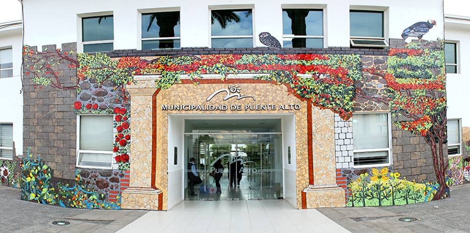
Proyecto “ 1er Encuentro Internacional de mosaicos en Puente Alto”
liderado por Isidora Paz López.
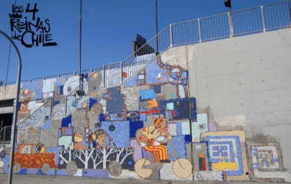
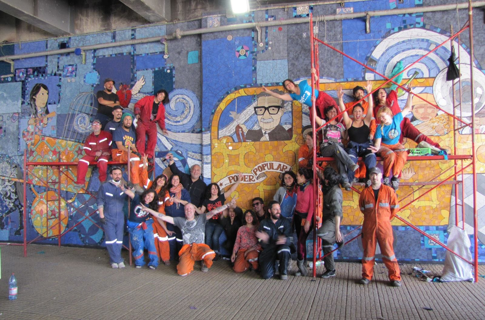
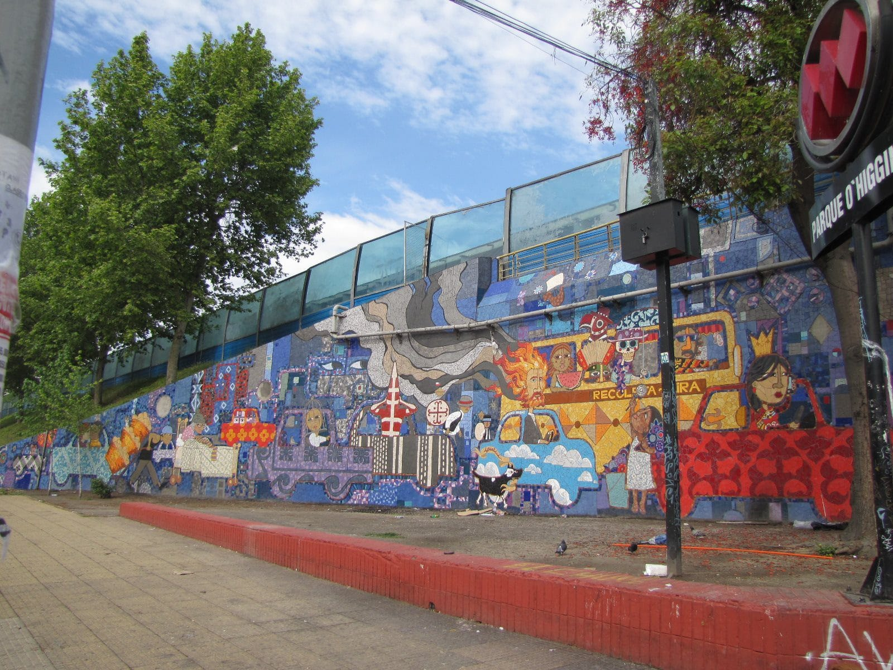
Proyecto “Las 4 Reinas de Chile” Parque O’Higgins
liderado por Ian Pierce (Ekeko)
Talleres
“Aprender creando: espacios donde la imaginación toma forma”
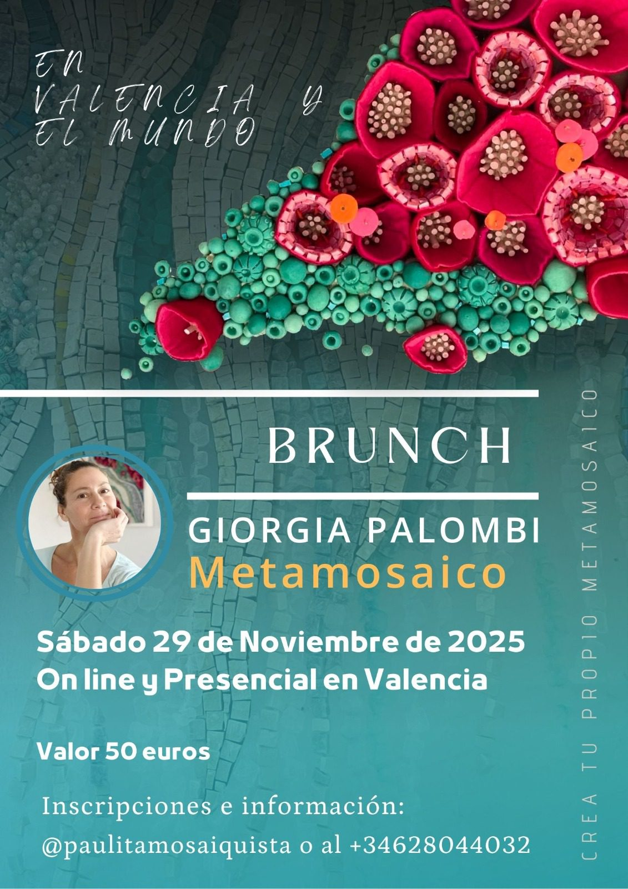
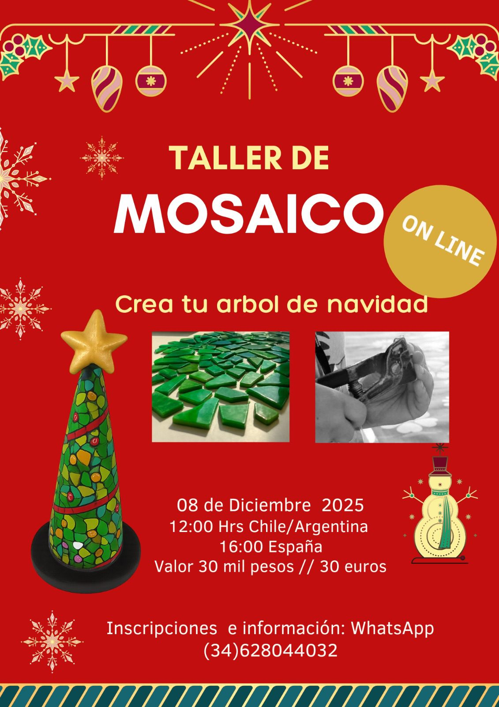
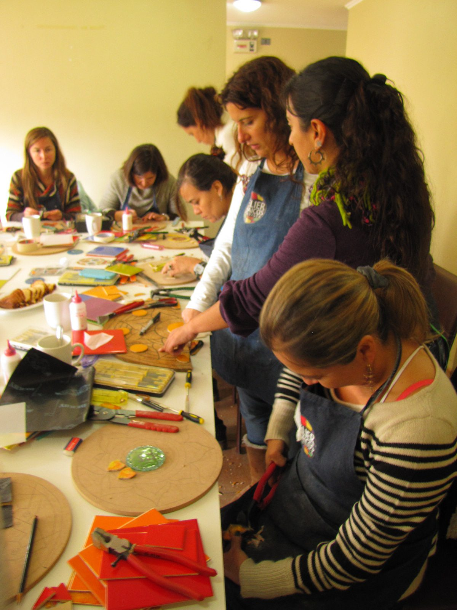
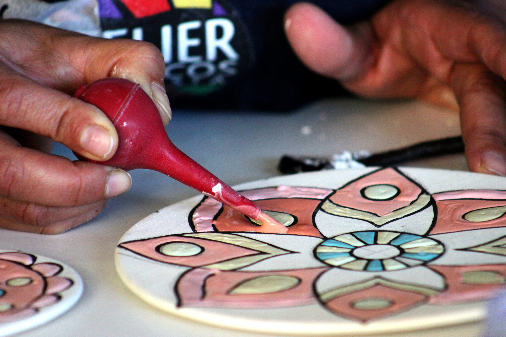
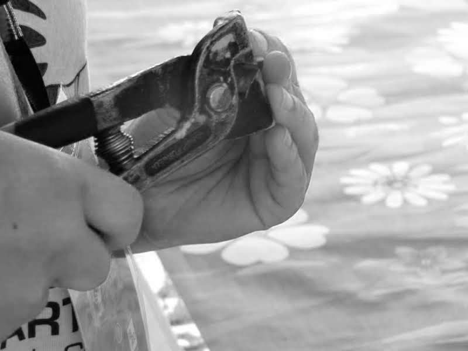
Ofrecemos clases personalizadas de mosaico para todos los niveles. Clases de cuerda seca y decoración de azulejos entre otros.
Workshop temáticos y con artistas internacionales.
Los grupos son muy reducidos dando una atención personalizada. (si deseas más información sobre los talleres y actividades inscríbete a mi canal de difusión y serás el primero en enterarte). Tambien hacemos clases a grupos para cumpleaños y despedidas de solteras.
El taller es un espacio acogedor con vistas al mar ubicado en Playa Motilla, Valencia.
Mis Exposiciones
“Un recorrido visual por los hitos de mi camino artístico”
Marzo 2016
Muestra internacional de Artistas Mujeres Cerámica y Mosaico
De Copete Gestión Cultural
Córdoba – Argentina
Julio 2017
Exposición en San Francisco
Colegio de Arquitectos de la Provincia de Córdoba
Córdoba – Argentina
Octubre 2020
Mova Street Art Internacional 2020
De Copete Gestión Cultural
Buenos Aires – Argentina
Marzo 2023
Exposición colectiva “8 Marc Dones Ceramistes”
Casa Violeta – Parc dels Filtres Ajuntament Manises
Valencia – España
Marzo 2024
Exposición colectiva “8 Marc Dones Ceramistes”
Casa Violeta – Parc dels Filtres Ajuntament Manises
Valencia – España
Julio 2024
Exposición cerámica organizada por la Asociación GRAK y la Oficina de Turismo de la ciudad de Petrinja
Centro Cultural Gradska Munjara
Petrinja – Croacia
Workshops con artistas internacionales
“Intercambios creativos que enriquecen mi obra y mi visión”
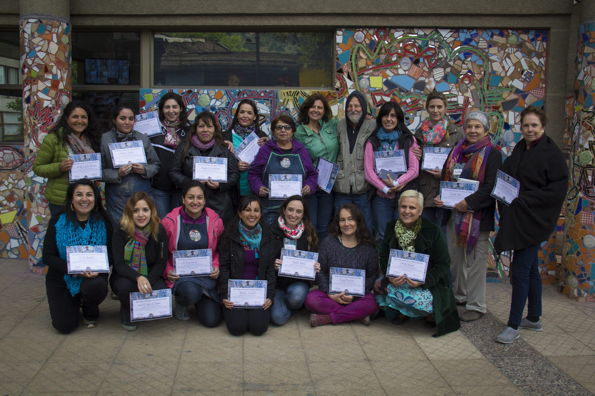
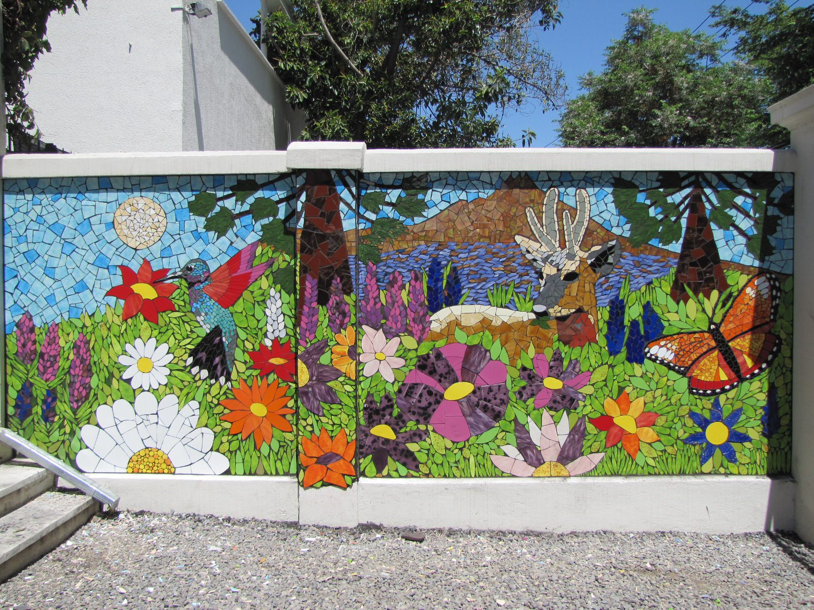
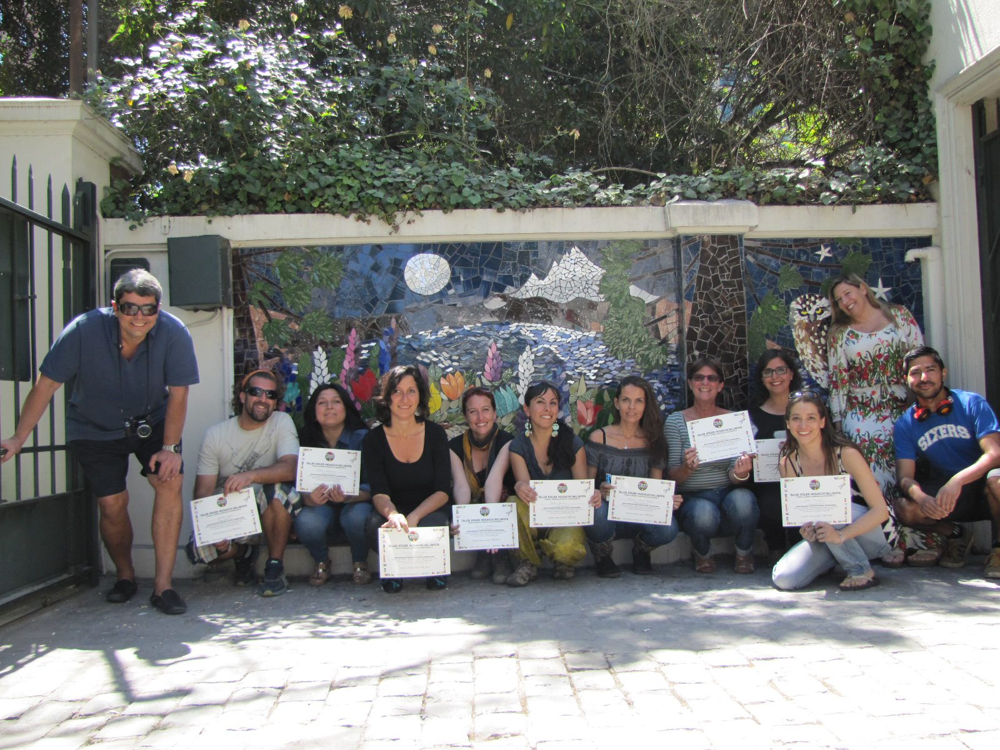
Mi gran maestro Isaiah Zagar
“Junto a el, descubrí técnicas, visión y un profundo amor por el mosaico.”